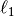
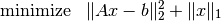
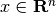
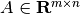
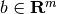
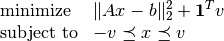
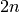
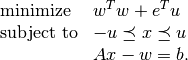

L1-norm regularized least-squares¶
We consider a least-squares problem with -norm regularization
(1)
with variable  and problem data  and . The problem is equivalent to a QP
(2)
with  variables and constraints. The problem can also be written as a separable QP
(3)
Documentation
Solvers for the -norm regularized least-squares problem are available as a Python module l1regls.py. The module implements the following three functions:
 .
.Example
from l1regls import l1regls
from cvxopt import normal
m, n = 50, 200
A, b = normal(m,n), normal(m,1)
x = l1regls(A,b)